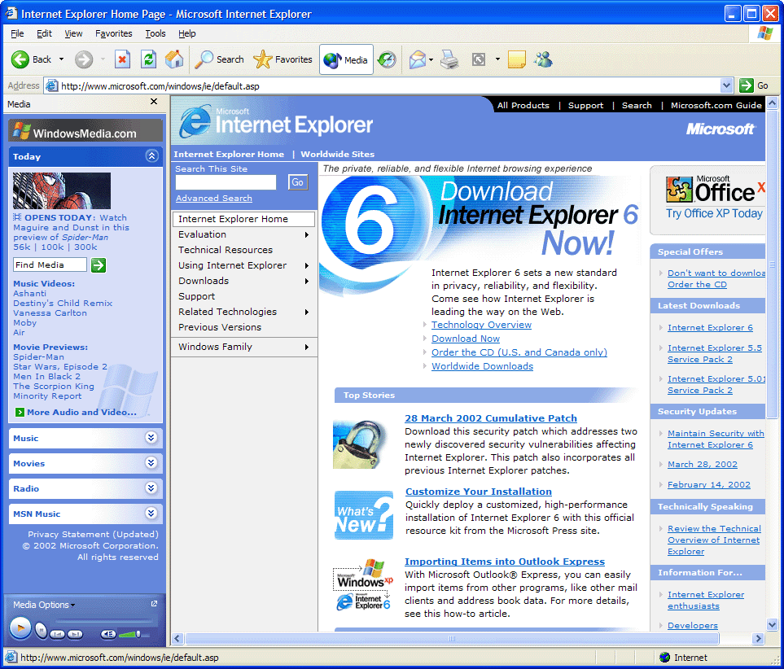
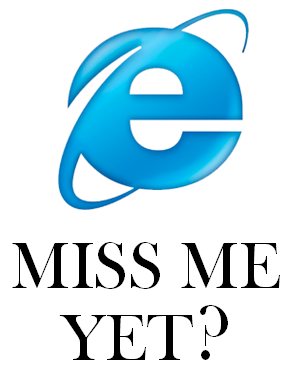

The Internet is Serious Business!
Home > Computers, Technology, and Internet > Microsoft > Windows XP > My Old Friend, Internet Explorer 6
We got Internet access in our house for the first time around November 2003. At the time, I was using Windows XP, which comes bundled with Microsoft Internet Explorer 6 (IE6) by default, so my first peek at the World Wide Web (and, I recall, some FTP sites here and there) was through IE6. Of course, back then I didn't even know what a Web browser was; I simply believed that the little light blue lowercase e was how I opened
the Internet.
As I am a fellow who tends to get stuck in his ways and is largely skeptical of change, I continued to use IE6 as my primary Web browser for nearly six years, until September/October 2009, when I upgraded from Windows XP to Windows 7. Even then, though, the only reason I stopped using IE6 was because it just doesn't work on Windows 7, despite my efforts at the time to try to get it to work.
I never knew just how much I treasured this Web browser until Windows 7 forced me to stop using it. To provide just a few examples: it was the browser that I first connected to the Internet with, and the one that I first experienced the early and mid-2000s Web with, a magical time when personal Web sites still abounded; it was the browser that I discovered RuneScape with, and the one I played that game in for so many years, back when it was still easy to run Java applets in the browser; it was the browser that I discovered the old eBaum's World and Newgrounds with, and the one I used to browse those sites back when I still visited them regularly; it was the browser that I discovered 4chan and Encyclopedia Dramatica with, and the one I used to browse those sites for nearly two years; and it was the browser that I discovered YouTube with, and the one I used to log in and use my account to experience that site (back when I still maintained a YouTube account). Much of what I consider to be my most important personal discoveries and experiences on the Web were through the familiar frame of Internet Explorer 6:

For me, Internet Explorer 6 will always be the browser of the glorious 2000s Web. I miss clicking those large Back and Forward buttons, with their green circle enclosing the arrow; I miss the neat little Home button; I miss the enormous Favorites button, placed in between all of the other buttons; I miss the address bar being placed at the very bottom of the upper frame of the browser, on its own row; I miss the little Windows logo at the top-right corner of the browser, which would animate every time a new page was loading; I miss tabless browsing (yes, I am serious—IE6 does not support tabs at all, and so I grew so accustomed to Web browsing without tabs that, even today, in 2020, I still prefer not to use them); and I miss the browser as a whole like you might miss an old friend you hardly see anymore. IE6 is not dead—I can still start up my Windows XP virtual machine and see my old friend—but every year it becomes more disabled, as the number of Web sites which still work on it dwindles.
The early/mid-2000s were a wonderful time for Internet Explorer. According to TheCounter.com, OneStat.com, ADTECH, and WebSideStory (data which Wikipedia has very neatly organized), during the early and mid-2000s Internet Explorer absolutely dominated the Web browser market, with some years having a market share of over 90%, or even over 95%; no doubt that IE6 contributed the most to these numbers among all of the then-existing versions of Internet Explorer. It truly was a great time, back when Microsoft, through the immense market share of IE6, could basically dictate Web standards, and when you didn't really need to worry that much about cross-browser compatibility, because even if you only ever tested your Web site in IE6, at one point in time you could be confident that over 95% of Web users would be able to view it without issues. Not even Google Chrome today has that sort of dominance.
Now that hardly anybody uses IE6 anymore, Web designers and developers have become quite smug, and ridicule it without hesitation and like to feign horror if you mention it to them. These days, they seem particularly eager to doubt the value of designing Web pages to be compatible with old browsers, and proclaim that old browsers held back (and are still holding back) the Web
(or at least Web design), but I like to say that old browsers kept the Web grounded, and kept Web design sane. Ever since the early 2010s, when IE6 usage became negligible in the United States (China at the time still remained a glorious bastion of IE6), hip
Web design morphed into something truly awful: bloated, mobile-centric, space-wasting, childish flat design, which by and large focuses more on looking pretty than on being lightweight, compatible with old browsers, and easy to use. Internet Explorer 6, the great guardian of sensible 2000s Web design, had fallen, and consequently many, many sites have now embraced this cancerous fad.

We all will, eventually.


 All written materials on this Web site are my own, and all are released under the Do What the Fuck You Want to Public License Version 2.
All written materials on this Web site are my own, and all are released under the Do What the Fuck You Want to Public License Version 2.
This page last modified on 26 March 2021.